A bio on all current drivers and gunners, and what I think of them
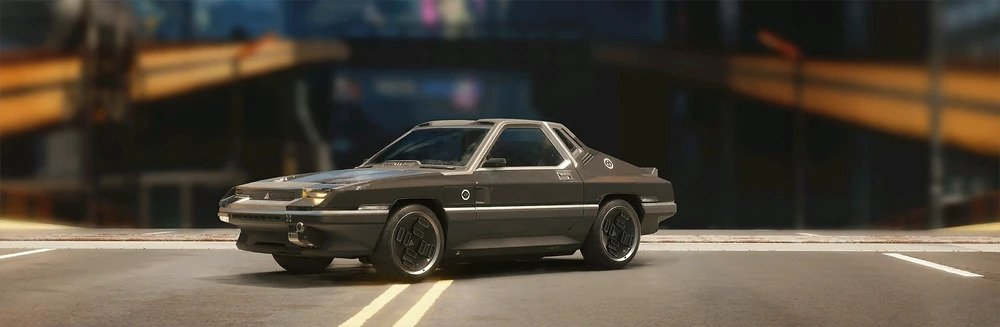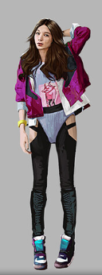 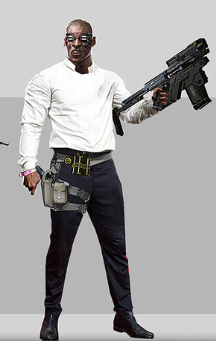
Kattie & Dax Chlor
Back for their fifth year, its our first team and my favorite Kattie and Dax Chlor. Driving their trusty Archer Quartz EC-L r275. You know, there is something funny about making a civillian four seater so sturdy and reliable you have to expand to the sports car market (yes the Quartz is a sports car believe it or not) to keep making sales. Fortunetly Archer keeps their reputation for reliability with this little two seat beauty. Sturdy, reliable and just marginally slower than their Shion counterpart. With the skills of former Afterlife merc Kattie behind the wheels and Dax's top of the line Smart-link fire power they've been top 3 all but 1 year of their participation. I have to admit they are sort of a jack-of-all-trades master of none kinda deal. Their car is fast, not the fastest, strong but not the strongest. Kattie's a great driver, but not the greatest. Dax is packing, but not the... packiest? Uh you get the point. Though their unique combination of talents, Dax being former Arasaka security and Kattie's merc background, they adapt and improsive better than any other team, and its that creative problem solving I just love. Their rivalry with current Arasaka asset Mercury makes their story all the better, I just hope they don't ultimately end up lossing to the corpos they've been fighting for so long.
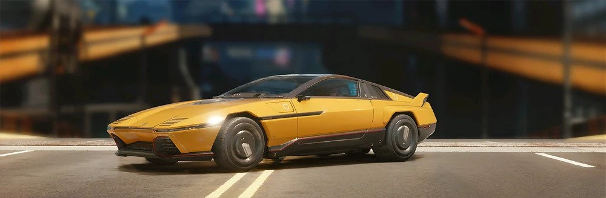
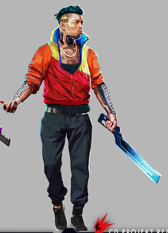 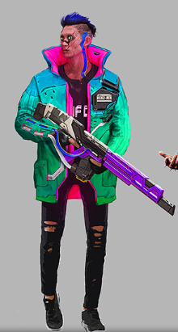
Ze-Yun & Eun Jiwoo
Next up on the list, you know 'em, you love 'em, a fan favorite team and last years champinos. Big bro Ze-Yun and his Hwarang Eun Jiwoo, blazing past the competition in their souped up MZ2. Now why you'd need to go and soup up a car like MZ2 I have no idea but that baby slides across Night City like it was driving on ice with a jet engine on the back, and thats before the modifications! Can't deny Shion makes preem cars built for the future, and it really fits the street race asthetics don't you think? Though these boys fascination with technology doesn't end there. Eun, famously uses his Tyger Clawz modded Achillies M-179 militech precision rifle to blow straight through the armor of opposing cars, flatlining any driver or gunner unlucky enough to get hit. Unfortunetly for Eun, his partner Ze-Yun swerves through the streets of Night City faster than any turn should allow him to, leading to a lot of missed shots. That's why we love them though, high octane action.
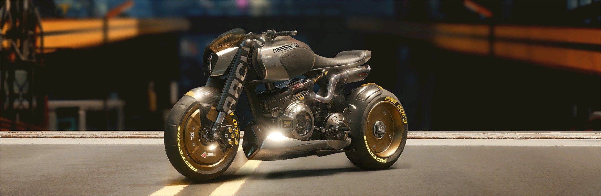
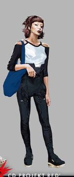 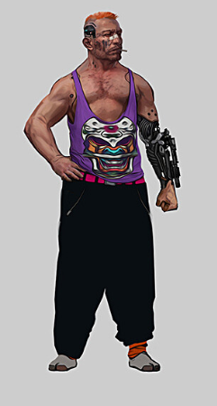
Cao Long & Androwski Talizck
Alright roll 'em out and give it up for your favorite biker bitch and USSR reject. It's Cao Long and Androwski, holding on tight to eachother on their ARCH Nazaré. Say what you will about them but its ballsy as fuck to Death race on a fucking bike, AND THIS IS THEIR THIRD YEAR PARTICIPATING. Explain that one to me. Can't hate on the ARCH Nazaré though, it's the go to two wheeled ride for nomads and city folk. Sturdy for its size and only outsped by their japanese competitors Yaiba with their Kusanagi CT-3X. Long is an excellent motorcycle driver as well, bobing and weaving through traffic, and her being fairly new to Night City isn't bad either, no real enemies that are gunning for them. Another benefit for the team is Androwski's PLS aka his arm of explosive doom, in strategy talks during our latest interview I learned that they don't like when they have to fire it since it causes the whole backside of the motorcycle to be pushed away forcing Long to do some pretty difficult parrying, but on the other hand no other team really wants to get hit by it either since there aren't a lot of cars that could tank it. Which as lead to a strange stalemate with the bikers and their death race competitors. This works well in their favor since it allows Long to focus exclusivly on driving as fast as possible, using the shortest route. I do think it's just a matter of time before some gonk breaks the stalemate though... Shit choom I'm not gonna lie. I can't wait for that. Don't get me wrong, I like the two, I just like explosions more.
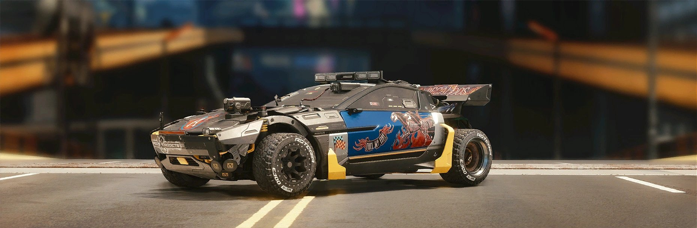
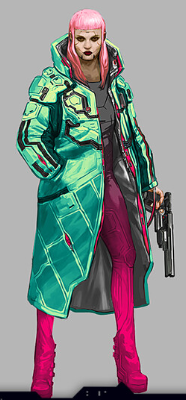 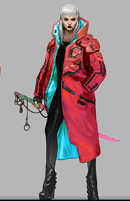
Luna & Star Phaser
Shieet truth be told I don't know much at all about these two. Honestly. I tried digging deep. I stuck my neck out, deep dove into some places Netwatch woudln't even find, yet I got shit. I know Star's got a industrial grade Sandevistan and quad-microrotors making her clearly the best driver out of all 8 teams. Her sister Luna got a modified Kerenzikov and Gorilla arms to support her fucking RT-46 Burya pulsar revolver. Even their car is insane, a Mitzutani Shion MZ2 but tricked out to all hell. Some real nomad shit on this thing. Off-road compensators, cage and suspension amps. They've got built in dual-mini rocket launchers. By all accounts they should dominate the races yet there is always some freak accident stopping them from getting first. Now you'd think there'd be foulplay involved here, that they rig their own shit bcs who'd keep racing after a militech behemoth derails on a highway above, crashing down perfectly blocking their pass of Ze-Yun in the 2079 finale. But nope, got one of my street goons to check em out with that new Biotechnica pheromone filter and stress detection, high grade lie detection shit. Nope, they're telling the truth, they just want to race normally, they just want to win once. Didn't force my boy to ask further questions since they're scary af.
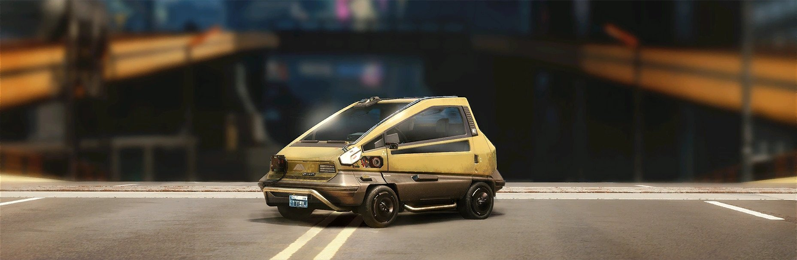
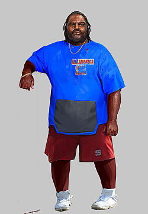 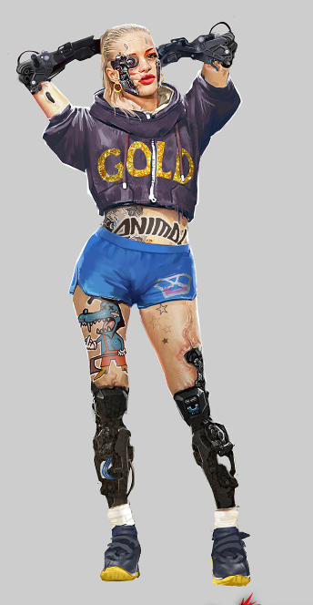
Lawrence & Hydralics
Oh my god not these fucking two. God damn it I hate these two gonks. Cyberpyscho bitch and the fat fuck driver, with the dumbest car you could imagine. HOW ARE THEY STILL ALIVE? WHY? I'm so pissed off. Year after year. I swear to God one of these days im gonna gather enough eddies to place a hit on these two. THAT'S A TWO SEATER CAR, FOR REAL, LOOK IT UP. I KNOW SOME OF YOU POOR FUCKS OWN ONE OF THESE MAKIGAI MAIMAI PIECES OF SHIT. Two seater car but Lawrence is to fat so he takes up both spaces. That's why Hydralics hangs of the back of the car. And no I don't care about the fact that she does ''cool shit'' like jumping to other cars and ripping them open with her Mantis claws. It's all dumb, how haven't they gotten blown up yet? How haven't they crashed yet? I mean one hit, that's it, one crash with that piece of shit eddies saver and gone but nooo they somehow always make it out. God DAMN IT.
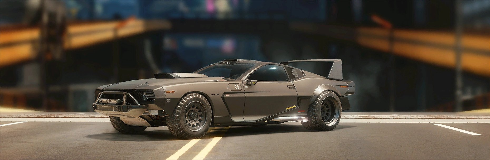
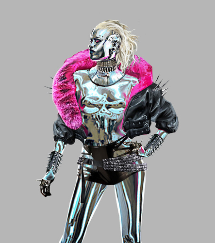

Mercury & Mika
Here's an interesting team. Former super-BD star and winner of 2075's ''Night City Stardom'' Mercury and her manager (I think she's still technically her manager? Like she never stopped singing) Mika. She's said before that the reason she races is because after her chromakeover she's struggling to feel the same excitement while singing. Apparently only a lethal death race can give her what she wants. I do wonder if there's more to it than that though, she's an Arasaka asset she doesn't even hide that part and the vehicle she drives, well that used to belong to Sampson, one of the OG goats of DR. Then after that V drove it for awhile before they dissappeared, even crushed the 2078 races with it. But now some pop singer with an addrenalin addictions got it? Preem fucking car though, can't deny that Type-66 with some extra trick to it, and on the tracks she's not half bad either. Honestly I don't really care if there is an alterior goal, they kill it on the tracks and that's what matters. Plus I love seeing the Cthulu back in action.
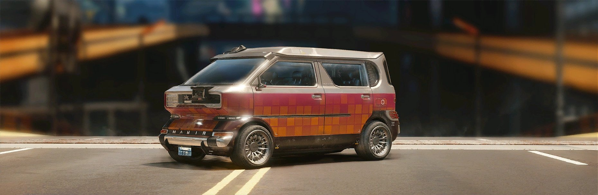
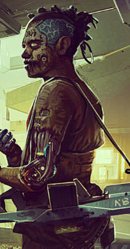 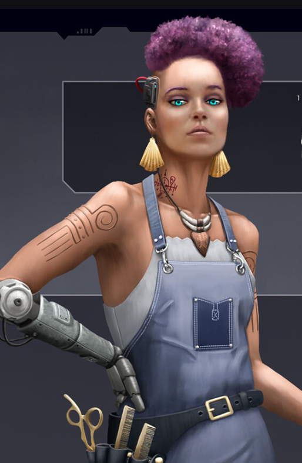